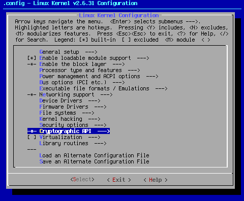
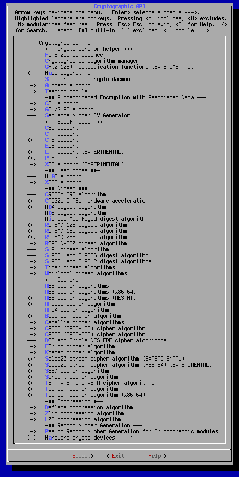

Custom Search
This page covers Cryptographic API.

Arrow key down to the area shown. When you hit <Select> at this point, you will bring up the following sub page:

Some may wonder why I would turn off all the security settings, yet I turn on all of the cryptographic options. While I consider security to be yours to set according to your personal comfort level, cryptographic services are important, very common, and needed for certain basic things, such as wireless networking encryption (WEP, WPA, etc.). Without the cryptographic settings turned on, some services will simply fail.
Why turn them all on? Simple. A long time ago, when I was but a n00b, I read in a forum that it was a good idea to turn on all the cryptographic options to insure full compatibility with wireless networking. I later learned this wasn't an absolute necessity. As a matter of fact, my ongoing research tells me that I might want to consider dumping some of the deprecated stuff, which actually does exist. That is for another phase of settings. I have to leave myself something new and exciting for the update of these pages.
There are numerous devices and networking setups that use encryption regularly, such as ssh, ssl, and IPsec. To my mind, being able to decode anything that comes down the line is a really good thing. Further, since I have no way of knowing all that the potential user of a kernel seed will face or has set up, I figured I'd rather have all those settings on than have to try to troubleshoot any of the myriad problems that could arise if they were turned off.
As for why I compile them all in: extra files hanging out. While it is clear from the research I've done on these pages that a balance of modular and in-kernel drivers is the best way to go, my opinion is that the number of modules should be kept to a minimum. Less module files means less files to get corrupted should something awful happen.
Fewer modules means fewer avenues of exploitation when someone makes it their business to bring your system crashing down. Since these things are going to basically sit in the kernel unused until absolutely needed, they stay out of the way of fiddling fingers. Since they are compiled into the kernel, they aren't as easy to break via arbitrary code introduced through a modified module.
While compiling all that stuff in grows the kernel image larger, considering that the average kernel image is in the 3 Megabyte range, what's a few hundred K more or less? They sit there in the kernel doing nothing until they are needed, operating seamlessly and invisibly. Seamless operation always makes Pappy happy.
--- Cryptographic API
*** Crypto core or helper ***
--- FIPS 200 compliance
FIPS or Federal Information Processing Standards is a set of standards for computer systems used by the US Federal government. This option turns on the FIPS boot option, which is required if you're using your system in conjunction with the US government. While it's probably not needed for most users, the option is hardwired to "on" by selecting other options.
--- Cryptographic algorithm manager
According to < Help >,"Create default cryptographic template instantiations such as cbc(aes)"
This option is turned on by turning on most of the other options below, or can be manually selected if you decide to turn some off. It stands to reason if one is going to use more than one of the encryption settings below, which is pretty much a necessity, you're going to want a manager to keep track of things.
--- GF(2^128) multiplication functions (EXPERIMENTAL)
This is needed by some cypher modes. This option will be selected automatically if you select such a cipher mode. Since I select every cipher, it follows that this option is hardwired to on.
< > Null algorithms
These null algorithms are used by IPsec, and do nothing. For that reason, this is the only setting that defaults to off in this group.
<*> Software async crypto daemon
According to < Help >,"This is a generic software asynchronous crypto daemon that converts an arbitrary synchronous software crypto algorithm into an asynchronous algorithm that executes in a kernel thread." This is used for WEP, and is therfore necessary if you use WEP encryption with your wireless network.
<*> Authenc support
This combined mode IPsec wrapper is a requirement if you are going to use the IPsec system.
< > Testing module
This module is a down and dirty module used for testing purposes. If you know what you're doing, go ahead and mess with this setting. Since I didn't at the time, and have yet to research this particular topic to any degree, this setting is defaulted to off.
*** Authenticated Encryption with Associated Data ***
<*> CCM support
Counter with CBC-MAC (CCM) is a generic authenticated encryption block cipher mode. CCM is only defined for use with 128-bit block ciphers, such as AES [AES]. This setting is also an IPsec requirement.
<*> GCM/GMAC support
This setting turns on support for Galois/Counter Mode (GCM) and Galois Message Authentication Code (GMAC). GCM and GMAC provide stronger authentication assurance than a (non-cryptographic) checksum or error detecting code. In particular, they can detect both a) accidental modifications of the data, and b) intentional, unauthorized modifications. This is yet another requirement for IPsec.
--- Sequence Number IV Generator
This IV generator generates an IV based on a sequence number by XORing it with a salt. This algorithm is mainly useful for AES CTR mode.
*** Block modes ***
--- CBC support
In the cipher-block chaining (CBC) mode, each block of plaintext is XORed with the previous ciphertext block before being encrypted. This is yet another requirement for IPsec.
--- CTR support
CTR mode is a little different than the other CipherModes because in fact the plainText is not directly encrypted to obtain the cipherText. Instead, a counter is encrypted, and the result of that is XORed with the plainText to get the cipherText. This is yet another requirement for IPsec.
<*> CTS support
Ciphertext stealing (CTS) provides support for sectors with size not divisible by block size, for example, 520-byte sectors and 16-byte blocks. This mode is required for Kerberos gss mechanism support for AES encryption.
--- ECB support
ECB (Electronic CodeBook) is the simplest operation mode compared to other operation modes. It simply encrypts the input block by block.
<*> LRW support (EXPERIMENTAL)
Liskov Rivest Wagner, (LRW) is a tweakable, non malleable, non movable narrow block cipher mode for dm-crypt.
<*> PCBC support
The Propagating Cipher-Block Chaining (PCBC) mode was designed to cause small changes in the ciphertext to propagate indefinitely when decrypting, as well as when encrypting.
<*> XTS support (EXPERIMENTAL)
XTS (XEX-based Tweaked CodeBook mode (TCB) with CipherText Stealing (CTS)) is an algorithm used by dm-crypt. It is used for disk encryption.
*** Hash modes ***
--- HMAC support
HMAC is a MAC (message authentication code), i.e. a keyed hash function used for message authentication, which is based on a hash function. A hash function H is a transformation that takes an input m and returns a fixed-size string, which is called the hash value h (that is, h = H(m)). This is yet another requirement for IPsec.
<*> XCBC support
The AES-XCBC-MAC-96 algorithm is a variant of the basic CBC-MAC with obligatory 10* padding; however, AES-XCBC-MAC-96 is secure for messages of arbitrary length.
*** Digest ***
--- CRC32c CRC algorithm
This setting adds CRC32C checksumming capabilities to the crypto routines.
<*> CRC32c INTEL hardware acceleration
In Intel processors with SSE4.2 supported, the processor will support CRC32C implementation using hardware accelerated CRC32 instruction. This option will enable any routine to use the CRC32 instruction to gain performance compared with software implementation.
<*> MD4 digest algorithm
The MD4 algorithm is intended for digital signature applications, where a large file must be "compressed" in a secure manner before being encrypted with a private (secret) key under a public-key cryptosystem such as RSA ((Rivest, Shamir and Adleman who first publicly described it); an algorithm for public-key cryptography).
--- MD5 digest algorithm
MD5 was a way to verify data integrity, and is much more reliable than checksum and many other commonly used methods.
--- Michael MIC keyed digest algorithm
Michael MIC is used for message integrity protection in TKIP (IEEE 802.11i). This is primarily for wireless networking.
<*> RIPEMD-128 digest algorithm
<*> RIPEMD-160 digest algorithm
<*> RIPEMD-256 digest algorithm
<*> RIPEMD-320 digest algorithm
RIPEMD-160 (RACE Integrity Primitives Evaluation Message Digest) is a 160-bit message digest algorithm (cryptographic hash function). It exists in the bit versions listed above.
--- SHA1 digest algorithm
<*> SHA224 and SHA256 digest algorithm
<*> SHA384 and SHA512 digest algorithms
The SHA hash functions are five cryptographic hash functions designed by the National Security Agency (NSA) and published by the NIST as a U.S. Federal Information Processing Standard. SHA stands for Secure Hash Algorithm. Hash algorithms compute a fixed-length digital representation (known as a message digest) of an input data sequence (the message) of any length.
<*> Tiger digest algorithms
Tiger is a fast new hash function, designed to be very fast on modern computers, and in particular on the state-of-the-art 64-bit computers (like DEC-Alpha), while it is still not slower than other suggested hash functions on 32-bit machines.
<*> Whirlpool digest algorithms
Whirlpool is a one-way collision-resistant hash function designed by Vincent Rijmen and Paulo S. L. M. Barreto. It operates on messages less than 2256 bits in length, and produces a message digest of 512 bits.
*** Ciphers ***
--- AES cipher algorithms
The Advanced Encryption Standard (AES) specifies a FIPS-approved cryptographic algorithm that can be used to protect electronic data. The AES algorithm is a symmetric block cipher that can encrypt (encipher) and decrypt (decipher) information.
x86 <*> AES cipher algorithms (i586)
x86_64 --- AES cipher algorithms (x86_64)
x86_64 <*> AES cipher algorithms (AES-NI)
These are the three available flavors of AES. The first two should be fairly self evident. AES-NI is specifically for I7, I5, and I3 Intel processors (Westmere and later). Technically speaking, AES-NI is not needed unless you have one of the above listed processors. It is turned on for the sake of completeness.
<*> Anubis cipher algorithm
ANUBIS is a block cipher that operates on data blocks of length 128 bits, and uses keys of length 128 to 320 bits in steps of 32 bits. It has been submitted as a candidate algorithm for the NESSIE cryptographic primitive evaluation effort.
--- ARC4 cipher algorithm
RC4 is a stream cipher designed in RSA laboratories by Ron Rivest in 1987. This cipher is widely used in commercial applications including Oracle SQL, Microsoft Windows and SSL. It is also a part of WEP, and the primary WPA cipher algorithm.
<*> Blowfish cipher algorithm
Blowfish is a symmetric block cipher that can be used as a drop-in replacement for DES or IDEA. It takes a variable-length key, from 32 bits to 448 bits.
<*> Camellia cipher algorithms
Camellia is a symmetric key block cipher developed jointly in 2000 by world top class encryption researchers at NTT and Mitsubishi Electric Corporation.
<*> CAST5 (CAST-128) cipher algorithm
The CAST-128 encryption algorithm is a DES-like Substitution-Permutation Network (SPN) cryptosystem which appears to have good resistance to differential cryptanalysis, linear cryptanalysis, and related-key cryptanalysis.
<*> CAST6 (CAST-256) cipher algorithm
CAST-256 is the Canadian entry in the competition for the new Advanced Encryption Standard. It takes its name from the original CAST cipher, designed by Carlisle Adams and Stafford Tavares; they and others worked on the design of CAST-256.
<*> DES and Triple DES EDE cipher algorithms
The Data Encryption Standard [DES] is the first encryption algorithm approved by the U.S. government for public disclosure. Triple DES (3DES) or the Triple Data Encryption Algorithm (TDEA) is a refinement of DES recognised as a FIPS-approved algorithm. Single DES is now recommended for legacy systems only.
<*> FCrypt cipher algorithm
The FCrypt algorithm is a secret key block cipher with a 64-bit key size and a 64-bit block size. The cipher has the same 16 round Feistel structure as DES.
<*> Khazad cipher algorithm
KHAZAD is an iterated 64-bit block cipher with 128-bit keys. It comprises 8 rounds; each round consists of eight 8-bit to 8-bit S-box parallel lookups, a linear transformation (multiplication by a constant MDS diffusion matrix) and round key addition.
<*> Salsa20 stream cipher algorithm (EXPERIMENTAL)
x86 <*> Salsa20 stream cipher algorithm (i586) (EXPERIMENTAL)
x86_64 <*> Salsa20 stream cipher algorithm (x86_64) (EXPERIMENTAL)
Salsa20 is a family of 256 bit stream ciphers designed in 2005 and submitted to eSTREAM, the ENCRYPT Stream Cipher Project. Their flavors are listed above.
<*> SEED cipher algorithm
SEED is a block cipher developed by the Korean Information Security Agency. It is used broadly throughout South Korean industry, but seldom found elsewhere.
<*> Serpent cipher algorithm
Serpent is a 128-bit block cipher designed by Ross Anderson, Eli Biham and Lars Knudsen as a candidate for the Advanced Encryption Standard.
<*> TEA, XTEA and XETA cipher algorithms
Tiny Encryption Algorithm is a simple cipher that uses many rounds for security. It is very fast and uses little memory. Xtendend Tiny Encryption Algorithm is a modification to the TEA algorithm to address a potential key weakness in the TEA algorithm. Xtendend Encryption Tiny Algorithm is a mis-implementation of the XTEA algorithm for compatibility purposes.
<*> Twofish cipher algorithm
x86 <*> Twofish cipher algorithms (i586)
x86_64 <*> Twofish cipher algorithm (x86_64)
Twofish is a block cipher by Counterpane Labs, published in 1998. It was one of the five Advanced Encryption Standard (AES) finalists, and was not selected as AES.
*** Compression ***
<*> Deflate compression algorithm
Deflate is a lossless data compression algorithm that uses a combination of the LZ77 algorithm and Huffman coding. It was first used in PKZIP.
<*> Zlib compression algorithm
Zlib is designed to be a free, general-purpose, legally unencumbered -- that is, not covered by any patents -- lossless data-compression library for use on virtually any computer hardware and operating system.
<*> LZO compression algorithm
LZO is a portable lossless data compression library written in ANSI C. It offers pretty fast compression and very fast decompression. Decompression requires no memory.
*** Random Number Generation *** <*> Pseudo Random Number Generation for Cryptographic modules
Random numbers are needed for certain cryptographic options to work properly. This makes sure that happens.
[ ] Hardware crypto devices--->
This main setting allows you to select the options below. Turn this on if and only if you have one of the below-listed devices.
--- Hardware crypto devices
< > Support for VIA PadLock ACE
< > PadLock driver for AES algorithm
< > PadLock driver for SHA1 and SHA256 algorithms
The C3 and Eden processor series from VIA include hardware acceleration for AES. The C7 series includes hardware acceleration for AES, SHA1, SHA256 and RSA. All of the above processor series include a hardware random number generator. If you have one of the listed processors, turn on this support.
x86 < > Support for the Geode LX AES engine
The AMD Geode LX800 CPU has an on-chip AES 128-bit crypto accelerations block and a true random number generator. Using this block for encryption and decryption is a lot faster than software implemented algorithms and it unloads the CPU. Turn this setting on if you have one of these processors.
< > Driver HIFN 795x crypto accelerator chips.
[ ] HIFN 795x random number generator
This setting allows you to have support for HIFN 795x crypto adapters, as well as the on-chip random number generator.
You have reached the end of page twelve.
Cheers,
Pappy